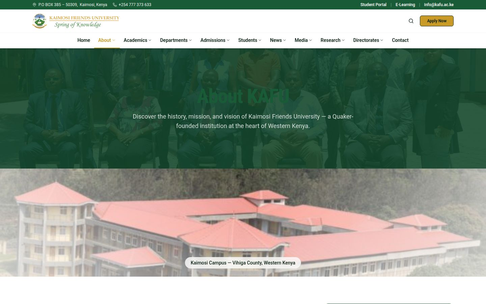
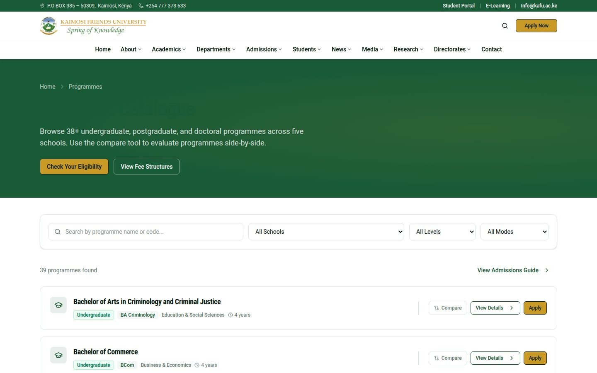
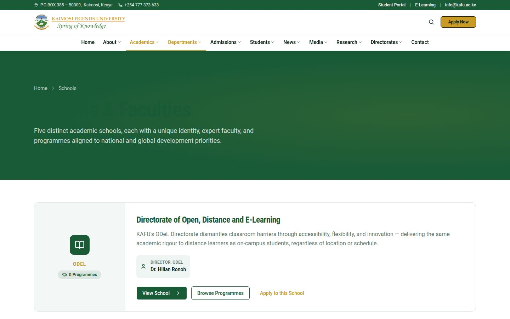
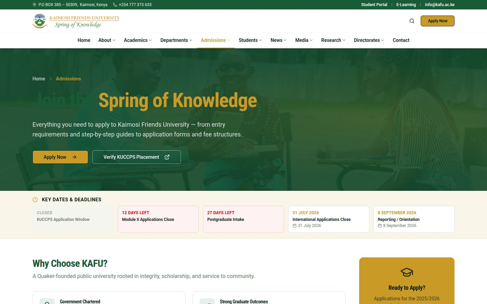
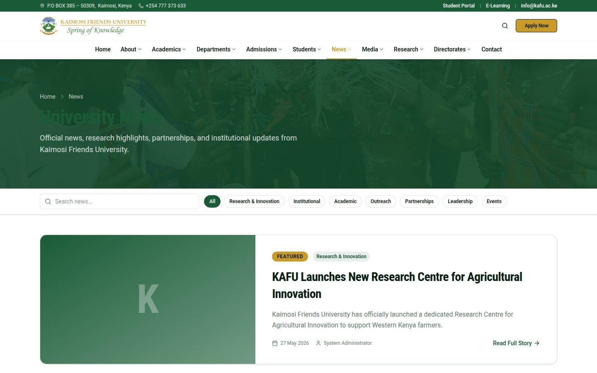
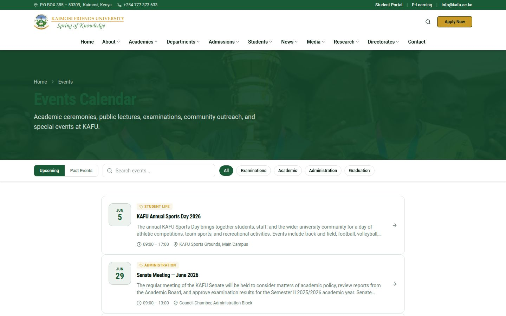
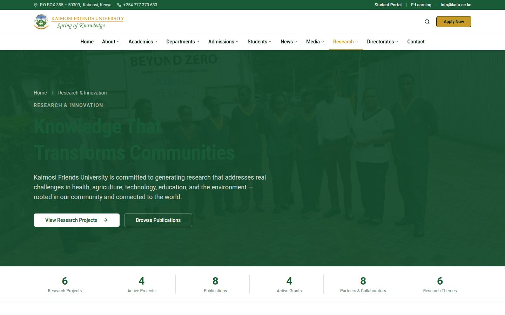
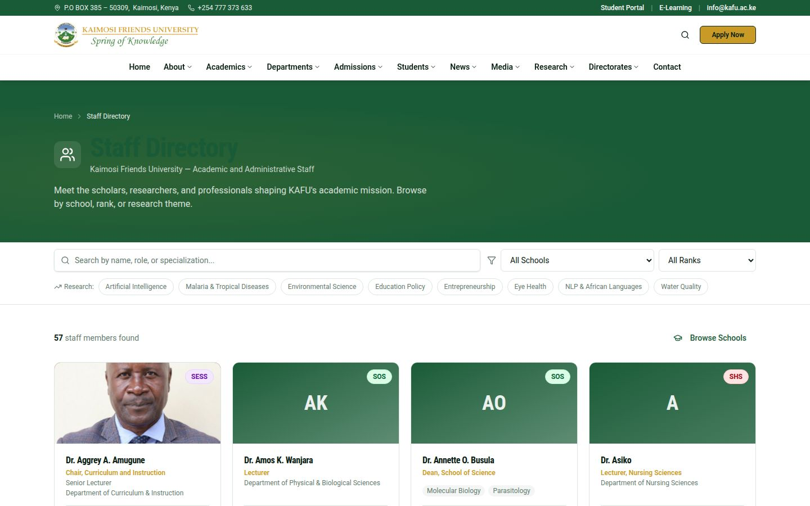
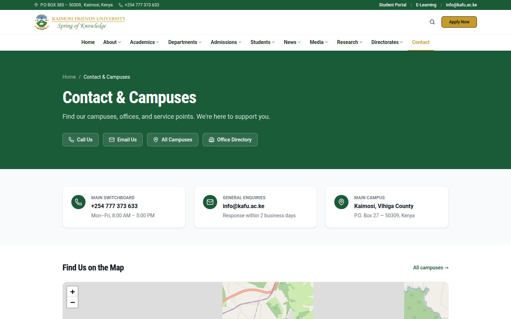

Part I
System Administration Manual
For ICT Directorate staff responsible for deploying, configuring, and maintaining the KAFU digital platform infrastructure.
1. System Architecture Overview
The KAFU Digital Platform is a multi-component web application comprising four independently deployable units that work together to form the university's digital presence.
Public Internet
↓
Web Server (Apache / Nginx)
www.kafu.ac.ke
React SPA (static files)
cms.kafu.ac.ke
CMS Admin React SPA
portal-update.kafu.ac.ke
Staff Portal React SPA
↓ API Calls (/api/*)
api.kafu.ac.ke
Laravel 11 PHP API
↓
MySQL / MariaDB Database
File Storage (uploads/)
Technology Stack & Components
| Component | Technology | Version | Deploy Path |
|---|
| Public Website | React + Vite + TypeScript | React 18, Vite 5 | www.kafu.ac.ke |
| CMS Administration | React + Vite + TypeScript | React 18, Vite 5 | cms.kafu.ac.ke |
| Staff Portal | React + Vite + TypeScript | React 18, Vite 5 | portal-update.kafu.ac.ke |
| Backend API | Laravel + PHP | Laravel 11, PHP 8.2 | api.kafu.ac.ke |
| Database | MySQL / MariaDB | MySQL 8.0+ / MariaDB 10.6+ | Local to API server |
| Auth | Laravel Sanctum | 4.x | Token-based, per-app |
| Package Manager | pnpm (monorepo) | 8.x | Workspace root |
Architecture Note
All three React applications are Single Page Applications (SPAs) built to static files. They make API calls to the Laravel backend. There is no server-side rendering — the web server only serves static HTML/JS/CSS files for the frontends.
2. Server & Hosting Requirements
Minimum Specifications
- PHP 8.2 or higher
- MySQL 8.0 / MariaDB 10.6+
- Apache 2.4+ with
mod_rewrite, mod_proxy, mod_headers
- Composer 2.x
- Node.js 18+ (for building frontends)
- pnpm 8.x
- 2 GB RAM minimum (4 GB recommended)
- 10 GB disk space (for uploads and logs)
PHP Extensions Required
php8.2-fpm or mod_phpphp8.2-mysql (PDO MySQL driver)php8.2-mbstringphp8.2-xmlphp8.2-curlphp8.2-zipphp8.2-gd (image processing)php8.2-intlphp8.2-fileinfo
| Subdomain | Document Root | SSL Required |
|---|
www.kafu.ac.ke | /public_html/ — React dist files | Yes (Let's Encrypt or purchased cert) |
api.kafu.ac.ke | /public_html/api/public/ — Laravel public dir | Yes |
cms.kafu.ac.ke | Separate subdomain document root — React dist | Yes |
portal-update.kafu.ac.ke | Separate subdomain document root — React dist | Yes |
3. Initial Server Setup
3a. Backend API Installation (Laravel)
-
Upload the API files
Upload the contents of artifacts/kafu-api/ to your server. Exclude: .git/, node_modules/, database/database.sqlite. The recommended server path is /var/www/kafu-api/.
-
Install PHP dependencies
SSH into the server and run:
cd /var/www/kafu-api
composer install --no-dev --optimize-autoloader
-
Configure the environment file
Copy the example environment file and edit it (see Section 4 for all values):
cp .env.example .env
nano .env # or use your preferred editor
-
Generate the application key
This is critical — it encrypts sessions and tokens. Run once per installation:
php artisan key:generate
-
Set correct file permissions
chmod -R 755 /var/www/kafu-api
chmod -R 775 /var/www/kafu-api/storage
chmod -R 775 /var/www/kafu-api/bootstrap/cache
chown -R www-data:www-data /var/www/kafu-api
-
Run database migrations and seed data
This creates all tables and populates them with initial data:
php artisan migrate --seed
-
Create storage symlink
Allows uploaded files to be accessed publicly:
php artisan storage:link
-
Cache configuration for production
php artisan config:cache
php artisan route:cache
php artisan view:cache
3b. Building & Deploying the Frontend Applications
All three frontends are built using the same process. Run these commands from the monorepo root (the workspace directory containing pnpm-workspace.yaml).
1. Install all dependencies (one command for the whole monorepo)
pnpm install
2. Build the Public Website
# Set the API URL environment variable first
echo "VITE_API_URL=https://api.kafu.ac.ke" > artifacts/kafu-foundation/.env.production
pnpm --filter @workspace/kafu-foundation run build
Upload the contents of artifacts/kafu-foundation/dist/ to www.kafu.ac.ke document root.
3. Build the CMS Admin
echo "VITE_API_URL=https://api.kafu.ac.ke" > artifacts/kafu-cms/.env.production
pnpm --filter @workspace/kafu-cms run build
Upload contents of artifacts/kafu-cms/dist/ to cms.kafu.ac.ke document root.
4. Build the Staff Portal
echo "VITE_API_URL=https://api.kafu.ac.ke" > artifacts/kafu-staff/.env.production
pnpm --filter @workspace/kafu-staff run build
Upload contents of artifacts/kafu-staff/dist/ to portal-update.kafu.ac.ke document root.
3c. Web Server Configuration
Each frontend SPA requires a catch-all rule to serve index.html for all routes (client-side routing).
Apache — .htaccess for each React app
Options -MultiViews
RewriteEngine On
RewriteCond %{REQUEST_FILENAME} !-f
RewriteCond %{REQUEST_FILENAME} !-d
RewriteRule ^ index.html [QSA,L]
Apache VirtualHost — API (Laravel)
<VirtualHost *:443>
ServerName api.kafu.ac.ke
DocumentRoot /var/www/kafu-api/public
<Directory /var/www/kafu-api/public>
Options -Indexes +FollowSymLinks
AllowOverride All
Require all granted
</Directory>
# CORS headers for the React frontends
Header always set Access-Control-Allow-Origin "https://www.kafu.ac.ke"
Header always set Access-Control-Allow-Methods "GET, POST, PUT, DELETE, OPTIONS"
Header always set Access-Control-Allow-Headers "Content-Type, Authorization, X-Requested-With"
SSLEngine on
SSLCertificateFile /etc/ssl/kafu.ac.ke.crt
SSLCertificateKeyFile /etc/ssl/kafu.ac.ke.key
</VirtualHost>
CORS Configuration
If you deploy frontends on different subdomains (www, cms, portal-update), you must update the config/cors.php file in the Laravel project to list all allowed origins. Otherwise API requests will be blocked by the browser.
4. Environment Configuration (.env)
The .env file in artifacts/kafu-api/ controls all runtime behaviour of the API. Never commit this file to version control.
# Application Identity
APP_NAME="KAFU API"
APP_ENV=production # local | staging | production
APP_KEY= # Generated by: php artisan key:generate
APP_DEBUG=false # MUST be false in production
APP_URL=https://api.kafu.ac.ke
# Logging
LOG_LEVEL=warning # warning or error in production
# Database (MySQL)
DB_CONNECTION=mysql
DB_HOST=127.0.0.1
DB_PORT=3306
DB_DATABASE=kafu_website
DB_USERNAME=kafu_db_user
DB_PASSWORD=your_strong_password_here
# Session & Cache
SESSION_DRIVER=file
SESSION_LIFETIME=120
SESSION_SECURE_COOKIE=true # true when HTTPS is active
CACHE_STORE=file
# Mail (SMTP)
MAIL_MAILER=smtp
MAIL_HOST=mail.kafu.ac.ke
MAIL_PORT=587
MAIL_USERNAME=noreply@kafu.ac.ke
MAIL_PASSWORD=your_email_password
MAIL_FROM_ADDRESS="noreply@kafu.ac.ke"
MAIL_FROM_NAME="Kaimosi Friends University"
# File uploads
FILESYSTEM_DISK=public
APP_URL=https://api.kafu.ac.ke
| Setting | Value in Development | Value in Production |
|---|
APP_ENV | local | production |
APP_DEBUG | true | false — critical for security |
DB_CONNECTION | sqlite | mysql or mariadb |
SESSION_SECURE_COOKIE | false | true — requires HTTPS |
LOG_LEVEL | debug | warning |
5. Database Administration
5a. Database Setup (MySQL / MariaDB)
On cPanel hosting, use MySQL Databases to create the database and user. Via command line:
# Log into MySQL as root
mysql -u root -p
# Create database
CREATE DATABASE kafu_website CHARACTER SET utf8mb4 COLLATE utf8mb4_unicode_ci;
# Create a dedicated user (never use root for the app)
CREATE USER 'kafu_db_user'@'localhost' IDENTIFIED BY 'your_strong_password';
# Grant permissions
GRANT ALL PRIVILEGES ON kafu_website.* TO 'kafu_db_user'@'localhost';
FLUSH PRIVILEGES;
cPanel Prefix Note
On shared cPanel hosting, database and username are often prefixed automatically with your cPanel account name (e.g. kafuuser_kafu_website and kafuuser_kafu_db_user). Use the exact prefixed names in your .env file.
5b. Running Migrations & Seeders
| Command | Purpose | When to Use |
|---|
php artisan migrate | Creates/updates all database tables | After initial setup, or after updates that include new migrations |
php artisan migrate --seed | Migrates + runs all seeders (demo/initial data) | Initial installation only — will overwrite existing data |
php artisan migrate:fresh --seed | Drops all tables, recreates them, seeds data | Development reset only — destroys all data |
php artisan migrate:rollback | Reverses the last batch of migrations | To undo the most recent schema change |
php artisan migrate:status | Shows which migrations have been run | Diagnostics |
php artisan db:seed --class=SiteConfigSeeder | Runs a specific seeder | Resetting CMS site configuration defaults |
NEVER run on production
php artisan migrate:fresh and php artisan migrate:fresh --seed drop all existing data. Never run these on the live production database. Always take a backup before running any migration on production.
5c. Backup Procedures
Take a full database backup before any system update, migration, or major content operation.
Manual Backup via mysqldump
# Full database dump
mysqldump -u kafu_db_user -p kafu_website > backup_$(date +%Y%m%d_%H%M%S).sql
# Compress the dump
gzip backup_$(date +%Y%m%d_%H%M%S).sql
Automated Weekly Backup (Cron)
# Add to crontab (crontab -e)
0 2 * * 0 mysqldump -u kafu_db_user -p'password' kafu_website | gzip > /backups/kafu_$(date +\%Y\%m\%d).sql.gz
Also back up the uploaded files:
tar -czf /backups/uploads_$(date +%Y%m%d).tar.gz /var/www/kafu-api/storage/app/public
6. API Server Administration
6a. Key Artisan Commands
| Command | Purpose |
|---|
php artisan serve | Start development server (local use only, not for production) |
php artisan config:cache | Cache configuration files — run after any .env change |
php artisan config:clear | Clear configuration cache (run before config:cache) |
php artisan route:cache | Cache route list — speeds up routing in production |
php artisan route:list | Show all registered API routes with HTTP methods |
php artisan cache:clear | Clear application cache |
php artisan queue:work | Process background jobs (email notifications etc.) |
php artisan schedule:run | Run scheduled tasks (called by cron every minute) |
php artisan sanctum:prune-expired | Remove expired authentication tokens |
php artisan tinker | Interactive PHP shell for debugging — admin use only |
6b. API Endpoint Reference
| Prefix | Purpose | Authentication |
|---|
GET /api/stats | University statistics (student count, staff, programmes) | Public |
GET /api/news | Published news articles | Public |
GET /api/events | Events listing | Public |
GET /api/schools | Schools and faculties | Public |
GET /api/programmes | Academic programmes | Public |
GET /api/staff | Published staff profiles | Public |
GET /api/navigation | CMS-managed navigation menus | Public |
POST /api/cms/login | CMS admin authentication | Public (rate-limited) |
/api/admin/* | CMS content management (full CRUD) | Sanctum token (CMS role) |
POST /api/staff/login | Staff portal authentication | Public (rate-limited) |
/api/staff/* | Staff profile management | Sanctum token (staff role) |
/api/reviewer/* | Content review actions | Sanctum token (reviewer role) |
Rate Limiting
Login endpoints are rate-limited to 5 attempts per minute per IP address. After 5 failed attempts, the IP is locked out for 1 minute. This is configured in app/Http/Middleware/ and the Sanctum configuration.
7. CMS User Account Administration
CMS users are managed through the CMS interface (see CMS Manual, Section 23) or directly via the database/Tinker for emergency access.
Creating a Super Admin via command line (emergency use)
php artisan tinker
# Inside Tinker:
$user = new App\Models\CmsUser;
$user->name = 'Admin Name';
$user->email = 'admin@kafu.ac.ke';
$user->password = bcrypt('TemporaryPassword123!');
$user->role = 'super_admin';
$user->save();
exit
Default Seeded Accounts
After running php artisan migrate --seed, the following test accounts are created. Change all passwords immediately after first login in production.
| Email | Default Password | Role |
|---|
super@kafu.ac.ke | password | Super Admin |
ict@kafu.ac.ke | password | ICT Admin |
comms@kafu.ac.ke | password | Comms Admin |
reviewer@kafu.ac.ke | password | Reviewer |
john.doe@kafu.ac.ke | password | Staff User |
Security — Change Default Passwords Immediately
All seeded accounts use the password password. This must be changed before the system goes live. Log in with each account and change the password, or use User Management in the CMS to reset them all.
8. Scheduled Tasks & Cron Jobs
Laravel's task scheduler handles background processes. Only one cron entry is needed — it runs every minute and Laravel decides which tasks to execute.
Add to server crontab (crontab -e as www-data or root)
* * * * * php /var/www/kafu-api/artisan schedule:run >> /dev/null 2>&1
| Scheduled Task | Frequency | Purpose |
|---|
| Publish Scheduled Content | Every minute | Automatically publishes content items whose published_at datetime has passed |
| Expire Content | Hourly | Marks content as expired when expiry_date is passed |
| Prune Sanctum Tokens | Daily | Removes expired API authentication tokens from the database |
| Database Backup | Weekly (Sunday 02:00) | Auto-backup of the database if configured |
9. Monitoring, Logs & Troubleshooting
Log File Locations
| Log | Path | Contents |
|---|
| Laravel Application Log | storage/logs/laravel.log | PHP errors, exceptions, custom log messages |
| Apache Access Log | /var/log/apache2/access.log | All HTTP requests to the API |
| Apache Error Log | /var/log/apache2/error.log | PHP fatal errors, Apache configuration issues |
| CMS Audit Log | Database table: audit_logs | All CMS user actions (viewable in CMS Admin UI) |
Common Issues & Solutions
| Symptom | Likely Cause | Solution |
|---|
| API returns 500 error | PHP exception or missing config | Check storage/logs/laravel.log. Set APP_DEBUG=true temporarily to see error details (revert after diagnosing). |
| Website shows blank / white screen | React JS error or missing API | Open browser developer tools → Console tab. Check for JS errors. Verify VITE_API_URL is correct. |
| API returns 403 Forbidden | File permissions or Apache config | Run chmod -R 755 /var/www/kafu-api and chmod -R 775 storage/. Check Apache AllowOverride All. |
| Uploaded files not displaying | Missing storage symlink | Run php artisan storage:link again. |
| Login returns "CSRF mismatch" | Session domain mismatch | Set SESSION_DOMAIN=.kafu.ac.ke in .env and run php artisan config:cache. |
| Changes not reflected after update | Cached config or routes | Run php artisan config:clear && php artisan route:clear && php artisan cache:clear |
| Database connection refused | Wrong DB credentials in .env | Check DB_HOST, DB_USERNAME, DB_PASSWORD. Test: mysql -u kafu_db_user -p kafu_website. |
10. Security Hardening Checklist
- Change all default seeded passwords before going live
- Set
APP_DEBUG=false in production
- Ensure
APP_ENV=production
- Enable HTTPS on all subdomains (SSL certificate installed)
- Set
SESSION_SECURE_COOKIE=true once HTTPS is live
- Configure CORS to only allow the three known frontend origins
- Set file upload limits in PHP (
upload_max_filesize=20M, post_max_size=25M)
- Disable PHP error display in production (
display_errors = Off in php.ini)
- Keep Laravel, PHP, and all Composer packages up to date
- Block direct access to
.env, .git/, and storage/ via Apache rules
- Use a dedicated MySQL user with only necessary database privileges (not root)
- Configure rate limiting on all authentication endpoints (already set in Laravel)
- Enable Apache
mod_headers and set security headers: X-Frame-Options, X-XSS-Protection, Content-Security-Policy
- Review the CMS Audit Log monthly for unusual activity
- Take and test weekly database backups
- Store backups off-server (e.g. separate storage location)
Apache Security Headers Block (add to VirtualHost)
Header always set X-Frame-Options "SAMEORIGIN"
Header always set X-Content-Type-Options "nosniff"
Header always set Referrer-Policy "strict-origin-when-cross-origin"
Header always set X-XSS-Protection "1; mode=block"
Header always set Strict-Transport-Security "max-age=63072000; includeSubDomains"
11. Maintenance Procedures
Putting the Site into Maintenance Mode
Option 1 — CMS Site Controls (preferred): Log into the CMS → Site Controls → and toggle Maintenance Mode. This shows a maintenance page to visitors while keeping the CMS accessible to admins.
Option 2 — Laravel command (full API maintenance):
php artisan down --message="Scheduled maintenance. Back at 14:00 EAT." --retry=600
# After maintenance is complete:
php artisan up
Applying System Updates
Take a full backupDatabase dump + storage files. Never update without a backup you can restore from.
Enable maintenance modeNotify users via email or announcement before starting.
Pull the latest codegit pull origin main in the project directory.
Update PHP dependenciescomposer install --no-dev --optimize-autoloader
Run database migrationsphp artisan migrate (not migrate:fresh)
Rebuild frontendsRebuild and re-upload the React apps for www, cms, and portal-update.
Clear and re-cachephp artisan config:cache && php artisan route:cache && php artisan cache:clear
Disable maintenance mode & verifyTest all three frontends and key API endpoints before announcing the system is back.
12. Full Deployment Checklist
Use this checklist for the initial go-live deployment. Tick each item only when verified.
Infrastructure
- DNS records configured: A records for www, api, cms, portal-update all pointing to server IP
- SSL certificates installed and auto-renewing (Let's Encrypt recommended)
- Apache virtualhost configured for each subdomain
- PHP 8.2+ installed with all required extensions
- MySQL/MariaDB running and accessible
Backend API
- Files uploaded (excluding .git, node_modules, .env)
composer install --no-dev --optimize-autoloader completed successfully.env configured with production values (not development defaults)php artisan key:generate run (APP_KEY is set)- Database created and credentials in .env are correct
php artisan migrate --seed completed — all tables existphp artisan storage:link run — symlink created- File permissions set: storage/ and bootstrap/cache/ are writable by www-data
php artisan config:cache && php artisan route:cache run- Cron job added for scheduler
- API health check:
https://api.kafu.ac.ke/api/stats returns JSON (not HTML)
Frontend Applications
- Public website built with
VITE_API_URL=https://api.kafu.ac.ke and uploaded
- CMS admin built and uploaded
- Staff portal built and uploaded
.htaccess catch-all rules in place for all three SPAs- www.kafu.ac.ke homepage loads correctly
- cms.kafu.ac.ke login page loads correctly
- portal-update.kafu.ac.ke login page loads correctly
Security & Go-Live
- All seeded default passwords changed
APP_DEBUG=false confirmed- HTTPS enforced on all subdomains (HTTP redirects to HTTPS)
- CORS configured to allow only the three known origins
- Content reviewed by Communications — homepage and About page are accurate
- Smoke test: create news item in CMS → verify it appears on www.kafu.ac.ke/news
- Smoke test: staff login to portal → update a field → submit → verify in CMS review queue
Part II
KAFU Website User Manual
A complete guide to navigating and using www.kafu.ac.ke — for prospective students, current students, academic staff, and the general public.
13. Introduction to the KAFU Website
The Kaimosi Friends University website at www.kafu.ac.ke is the official digital home of the university. It provides comprehensive information about academic programmes, admissions, research activities, staff, news, and services for the entire university community.

Figure 13.1 — The KAFU website homepage at www.kafu.ac.ke. The navigation bar provides access to all major sections.
What You Can Find on the Website
- All academic programmes and entry requirements
- Admissions information, deadlines, and application links
- University news, events, and announcements
- Staff directory with academic profiles
- Research projects, publications, and grants
- Contact details and campus locations
- Student services information
- Governance and leadership information
What the Website Is Not For
- Submitting assignment work or exam results (use the Student Portal)
- Accessing your student account (go to portal.kafu.ac.ke)
- Paying fees online (use the student portal)
- Emailing lecturers (use the contact details on their profile pages)
- Editing content — editing is done through the CMS by authorised staff only
14. Navigating the Website
The Navigation Bar
The navigation bar runs across the top of every page. It is divided into two areas:
| Area | Contents |
|---|
| Utility Bar (top strip) |
Contact information (phone and email), and three quick-access links:
Student Portal (portal.kafu.ac.ke) — for registered students,
E-Learning — online learning platform,
Info@kafu.ac.ke — general enquiries email
|
| Main Navigation |
Logo (click to return to homepage) + the main menu links:
Home, About, Academics, Departments, Admissions, Students, News, Media, Research, Directorates, Contact
|
| Action Buttons |
Search icon and the gold Apply Now button (takes you to the admissions application) |
Menu items with a dropdown arrow (⌄) open a mega-menu panel with sub-section links when clicked or hovered. For example, clicking Academics reveals links to Schools, Programmes, and academic resources.
Using the Search Function
Click the search iconThe magnifying glass icon in the top-right of the navigation bar opens the search bar.
Type your queryType any keyword — a programme name, a staff member's name, a topic, or a news headline. Results appear as you type.
Click a resultClick any result to go directly to that page. Results are grouped by type (Programmes, News, Staff, Pages).
15. Homepage
The homepage is your starting point. It summarises the most important information and provides quick routes to the most-visited sections of the site.
| Homepage Section | What It Shows |
|---|
| Hero Slideshow | Rotating banner featuring key messages from university leadership, with links to Admissions and key pages. |
| Admissions Banner | Current application status and key deadline dates. Shows countdowns to application closing dates. |
| Programme Discovery | Quick filter to find programmes by school and level. Enter a keyword to search all 38+ programmes. |
| Why KAFU | Key facts about the university — accreditation, graduate outcomes, research output, and community impact. |
| Schools & Faculties | Cards for each of the five schools, linking to their detailed pages. |
| Latest News & Events | The four most recent published news articles and upcoming events. |
| Opportunities | Current scholarships, job vacancies, tenders, and partnerships. |
| Digital Services Hub | Quick links to the Student Portal, E-Learning, Staff Portal, and Library resources. |
16. About KAFU

Figure 16.1 — The About KAFU page showing campus imagery and the university's history and mission.
The About section provides background information about the university. Access it from the About menu in the navigation bar.
| About Sub-page | What to Find There | URL |
|---|
| About KAFU | History, mission, vision, core values of the university | /about |
| Vice-Chancellor | Profile and message from the Vice-Chancellor | /about/vice-chancellor |
| Management | University Management Board members | /about/management |
| University Council | Council members and governance structure | /about/council |
| Strategic Plan | Current strategic plan document | /about/strategic-plan |
| Policies | University policies and regulations | /about/policies |
| Service Charter | Service delivery standards and commitments | /about/service-charter |
17. Academics — Schools & Programmes

Figure 17.1 — The Programmes catalogue showing 39 programmes with search, school filter, level filter, and compare function.
Schools & Faculties

Figure 17.2 — The Schools page listing all five academic schools and the ODeL Directorate.
KAFU has five academic schools. Click on any school card to view its departments, teaching staff, and the programmes it offers.
| Abbreviation | School Name | Key Disciplines |
|---|
| SESS | School of Education & Social Sciences | Education, Curriculum Studies, Criminology, Psychology |
| SBE | School of Business & Economics | Commerce, Business Administration, Finance, Economics |
| SCIT | School of Computing & Information Technology | Computer Science, Information Technology, Data Science |
| SOS | School of Science | Biology, Chemistry, Physics, Environmental Science |
| SHS | School of Health Sciences | Nursing, Public Health, Nutrition, Medical Sciences |
Finding a Programme
Go to ProgrammesClick Academics in the navigation then select All Programmes, or go directly to /programmes.
Search or filterUse the search box to type a keyword (e.g. "nursing", "data", "commerce"). Use the School dropdown to narrow by school, and the Level dropdown to filter by Certificate, Diploma, Degree, or Postgraduate.
View programme detailsClick View Details on any programme card to see the full description, duration, entry requirements, and fee structure.
Compare programmesClick Compare on up to 3 programmes, then visit /programmes/compare to see them side by side.
Apply for a programmeClick the gold Apply button on any programme — this takes you to the online application portal.
18. Admissions

Figure 18.1 — The Admissions page with key deadline countdown timers and application pathways.
The Admissions section is the primary destination for anyone considering joining KAFU. Access it via the Admissions menu or by clicking the gold Apply Now button in the navigation bar.
Admissions Pathways
| Pathway | Who It Is For | Link |
|---|
| KUCCPS (Government) | Kenya Certificate of Secondary Education (KCSE) students placed through the Joint Admissions Board via KUCCPS | /admissions → Apply Undergraduate |
| Module II (Self-Sponsored) | Self-sponsored undergraduate applicants who were not placed through KUCCPS | /admissions → Apply Undergraduate |
| Postgraduate | Holders of a first degree applying for Masters or PhD programmes | /admissions → Apply Masters / PhD |
| International Students | Students from outside Kenya applying for any programme | /international/study |
| KUCCPS Verification | Verify your KUCCPS placement status at KAFU | /kuccps-verify |
Key Dates Bar
The coloured deadline cards at the top of the Admissions page show all current and upcoming application deadlines with countdown timers. Cards shown in red mean the deadline has passed; amber means the deadline is approaching; green means there is time remaining.
Entry Requirements
General minimum entry requirements for undergraduate programmes:
- Government-sponsored (KUCCPS): Kenya Certificate of Secondary Education (KCSE) with a minimum mean grade as set by the Joint Admissions Board (JAB).
- Module II (Self-sponsored): KCSE with minimum grade C+, or equivalent qualification recognised by KAFU.
- Diploma programmes: KCSE with minimum grade C, or a relevant certificate qualification.
Use the Eligibility Checker at /admissions/eligibility to check your qualifications against specific programme requirements.
Application Tip
Always check the Admissions page for the most current deadline dates — they change each academic year. The Key Dates bar at the top is updated by the university's Admissions Office through the CMS.
19. News, Events & Announcements

Figure 19.1 — The News page with category filters. The top article is featured; others are listed below.
News
Access via News → University News in the navigation, or go directly to /news.
- Use the category buttons (Research & Innovation, Institutional, Academic, Outreach, Partnerships, Leadership, Events) to filter news by topic.
- Use the search box to find articles by keyword.
- Click Read Full Story to open the full article.
- Each article page shows the author, date, category, and related articles at the bottom.
Events Calendar

Figure 19.2 — The Events Calendar showing upcoming university events with dates, times, and venue information.
Access via News → Events or go to /events.
- Toggle between Upcoming and Past Events using the buttons at the top.
- Filter by type: Examinations, Academic, Administration, Graduation, Student Life.
- Each event card shows the date, time, venue, and a brief description.
- Click an event to open its full detail page.
Announcements
Official university announcements (exam timetables, fee notices, policy updates) are at /announcements. You can also access them via News → Announcements.
Opportunities
Job vacancies, scholarships, tenders, and research grant opportunities are at /opportunities. Filter by type to find what is relevant to you.
20. Research & Innovation

Figure 20.1 — The Research & Innovation overview page showing key statistics and research focus areas.
Access via Research in the navigation bar, or go to /research. The Research section showcases KAFU's academic and scientific contributions.
| Research Sub-section | What to Find | URL |
|---|
| Research Overview | Statistics, themes, and featured research achievements | /research |
| Research Projects | Active and completed research projects with principal investigators | /research/projects |
| Publications | Searchable catalogue of journal articles, books, and conference papers by KAFU researchers | /research/publications |
| Research Partnerships | International and local research collaborations and partner institutions | /research/partnerships |
| KAFU Journal | The university's own peer-reviewed academic journal | /research/journal |
21. Staff Directory

Figure 21.1 — The Staff Directory showing all 57 academic staff members with search and filter controls.
The Staff Directory at /staff lists all published academic and administrative staff profiles. Access via About → Academic Staff or by clicking Staff Directory in the footer.
Searching for a Staff Member
Use the search boxType the staff member's name, their role (e.g. "Lecturer", "Professor"), or their specialisation (e.g. "Machine Learning", "Public Health").
Filter by schoolUse the All Schools dropdown to narrow the list to staff in a specific school.
Filter by rankUse the All Ranks dropdown to show only Professors, Associate Professors, Senior Lecturers, or Lecturers.
Browse research themesClick any tag in the Research row (e.g. "Artificial Intelligence", "Eye Health") to filter staff by research specialisation.
Open a profileClick on any staff card to open their full academic profile page, which includes their biography, qualifications, courses taught, publications, and contact details.
What a Staff Profile Contains
| Profile Section | Contents |
|---|
| Header | Photo, name, title, designation, school, and department |
| Biography | Academic background, areas of expertise, and career highlights |
| Academic Identifiers | ORCID iD, Google Scholar, Scopus links (where provided) |
| Research Interests | Tags showing key research areas |
| Qualifications | Degrees and certifications with awarding institution and year |
| Teaching | Courses and units the staff member currently teaches |
| Research | Publications, active projects, grants, and PhD supervision |
| Contact | Office location, phone, email, and consultation hours |

Figure 22.1 — The Contact & Campuses page with key numbers, email, location, and an interactive map.
Access via Contact in the main navigation or go to /contact.
Key Contact Details
| Channel | Details | Hours |
|---|
| Main Switchboard | +254 777 373 633 | Mon–Fri, 8:00 AM – 5:00 PM |
| General Enquiries Email | info@kafu.ac.ke | Response within 2 business days |
| Main Campus Location | Kaimosi, Vihiga County — P.O. Box 27 – 50309, Kenya | — |
| ICT Support | ict@kafu.ac.ke | Mon–Fri, 8:00 AM – 5:00 PM |
| Admissions Office | admissions@kafu.ac.ke | Mon–Fri, 8:00 AM – 5:00 PM |
Campuses
The Contact page includes an interactive map showing all KAFU campus locations. Click All Campuses for a full listing with individual campus contact details, or go to /campuses.
Office Directory
The Office Directory at /offices lists all university offices and directorates with their functions and contact details. Useful for directing specific queries to the right department.
23. Student Services & Digital Portals
The Students section in the navigation provides links to student-specific resources and digital services.
| Service | Purpose | How to Access |
|---|
| Student Portal | Student academic records, registration, fee payments, exam results, timetables | portal.kafu.ac.ke — uses your student number and password |
| E-Learning Platform | Course materials, assignments, online lectures, discussion forums | elearning.kafu.ac.ke — uses your student email and password |
| Library Catalogue | Search physical and digital library resources, reserve books | Via Students → Library or library.kafu.ac.ke |
| Student Services Page | Information about counselling, health services, clubs, accommodation, and welfare | /student-services |
| International Students | Visa guidance, housing, orientation, and international student support | /international |
Important
The KAFU website at www.kafu.ac.ke is an information website. To access your personal student records, register for units, pay fees, or download results, you must log in to the Student Portal at portal.kafu.ac.ke using your student number and portal password.
24. Accessibility & Browser Support
Supported Browsers
| Browser | Minimum Version | Support Level |
|---|
| Google Chrome | Version 90+ | Full support — recommended |
| Mozilla Firefox | Version 88+ | Full support |
| Microsoft Edge | Version 90+ | Full support |
| Safari (macOS/iOS) | Version 14+ | Full support |
| Chrome (Android) | Latest | Full support — mobile responsive |
| Internet Explorer | Any version | Not supported |
Accessibility Features
- The website is designed to work with screen readers (ARIA labels are used throughout).
- Colour contrast meets WCAG 2.1 AA standards for readability.
- All images have descriptive alt text for users who cannot see images.
- The website is fully responsive — it adjusts automatically for phone, tablet, and desktop screens.
- All interactive elements are keyboard-navigable (Tab key to move, Enter to activate).
Internet Connection
The website is optimised for low-bandwidth connections. Images are compressed and content loads progressively. However, for the best experience, a minimum connection speed of 1 Mbps is recommended. Interactive maps may require a stronger connection.
Reporting Website Problems
If you find content that is incorrect, outdated, or a page that is broken, please report it:
- Email: ict@kafu.ac.ke — include the URL of the page and a description of the issue.
- Staff: Contact the Communications Office at communications@kafu.ac.ke for content-related issues.
Appendix
Reference Material
A. Glossary of Terms
| Term | Definition |
|---|
| API | Application Programming Interface — the backend system that the three React frontends talk to in order to fetch and update content. |
| Artisan | Laravel's command-line tool. Used by ICT to run migrations, clear caches, and manage the application from the server terminal. |
| CMS | Content Management System — the administration interface (cms.kafu.ac.ke) used by authorised staff to create and manage website content. |
| Composer | PHP package manager — used to install and update the Laravel API's dependencies. |
| CORS | Cross-Origin Resource Sharing — a browser security mechanism. Must be configured on the API to allow the React frontends to make requests. |
| cPanel | University hosting control panel — used to manage databases, email accounts, file manager, and subdomains on shared hosting. |
| Migration | A version-controlled database schema change. Running php artisan migrate applies all pending schema changes to the database. |
| Monorepo | A single code repository containing all four applications (website, CMS, staff portal, API). Managed with pnpm workspaces. |
| pnpm | Node.js package manager used for the JavaScript/React parts of the project. |
| Sanctum | Laravel's API authentication system. Issues tokens to CMS and staff portal users when they log in. |
| Seeder | A script that populates the database with initial or demo data. Run once during setup. |
| SPA | Single Page Application — a web app where navigation happens in the browser without full page reloads. All three React apps are SPAs. |
| SSL/TLS | Security certificate that enables HTTPS (the padlock in the browser). Required for all KAFU subdomains. |
| Vite | The build tool that compiles the React TypeScript code into static HTML/JS/CSS files for deployment. |
| KUCCPS | Kenya Universities and Colleges Central Placement Service — the government body that places students in universities after KCSE. |
| ORCID | Open Researcher and Contributor ID — a unique identifier for academic researchers, used to link a staff member's profile to their full publication record. |
| Department / Role | Email | Purpose |
|---|
| ICT Directorate | ict@kafu.ac.ke | System access, technical issues, CMS accounts, staff portal accounts |
| Communications Office | communications@kafu.ac.ke | Website content corrections, news & media enquiries |
| Admissions Office | admissions@kafu.ac.ke | Application queries, entry requirements, deadline information |
| Human Resources | hr@kafu.ac.ke | Staff profile corrections, employment verification |
| Research Office | research@kafu.ac.ke | Research publications, grants, and partnerships information |
| International Office | international@kafu.ac.ke | International student enquiries, exchange programmes, visa support |
| General Enquiries | info@kafu.ac.ke | General questions about the university not covered above |
| Main Switchboard | +254 777 373 633 | Phone enquiries, Mon–Fri 8 AM–5 PM EAT |
C. Document Change Log
| Version | Date | Author | Changes |
|---|
| 1.0 | June 2026 | ICT Directorate | Initial release — System Administration Manual + Website User Manual |
KAIMOSI FRIENDS UNIVERSITY
Spring of Knowledge
KAFU Digital Platform — Comprehensive Administration & User Manual
Version 1.0 | Prepared by the ICT Directorate | June 2026
P.O. Box 385 – 50309, Kaimosi, Kenya | ict@kafu.ac.ke | +254 777 373 633
CONFIDENTIAL — For internal use by KAFU staff only.
This document contains system configuration details. Do not distribute externally.